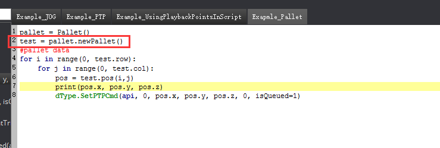

Script脚本编程
基本功能(Basic Introduction)
界面分为(控制按钮区、Dobot接口选择区、文本编辑区、托盘显示区、运行日志区)等五个区域。
The interface is divided into five areas: the control button area, the Dobot API selection area, the text editing area, the pallets display area and the running log area.
1.Script模块使用Python脚本语言，适合所有编程爱好者。
The Script module uses the Python scripting language for all programming enthusiasts.
2.文本编辑器内置高亮功能（Dobot接口高亮为绿色，Script框架关键字高亮为蓝色），是用户编程的好帮手。
Text editor built-in highlight function (Dobot API highlighted in green, Script frame key highlighted in blue) is a good helper for user programming.
3.用户可以在Dobot接口选择区找到对应的控制接口，也可以通过搜索栏进行快速检索。
The user can find the corresponding API in the Dobot API selection area, or quickly search through the search bar.
4.Dobot接口选择区附带接口说明功能，帮助用户快速上手。
Dobot API selection area built-in API description function to help users quickly get started.
5.用户可以通过文件管理按钮管理自己的代码。
Users can manage their own code through the file management button.

6.Script内置Python解析器，使用运行控制按钮能简单进行代码的运行操作，运行日志会动态显示。
Script built-in Python parser, user can simply run the code by using the operation control button, and the running log will be dynamically displayed.
托盘功能(Pallet function)
点击控制按钮区的“添加托盘”按钮，或在托盘显示区右键选择“编辑”，开启托盘编辑界面。
Click the “Add Pallet" button in the control button area, or right-click in the pallets display area to open the pallet editing interface.
将Dobot移动到托盘的三个关键点，并读取到托盘编辑器。
Move the Dobot to the three key point of the pallet and read them to the pallet editor.
按照托盘的分隔填入行数和列数。
Fill in the number of rows and columns according to the pallet.
生成的托盘会在托盘显示区显示。
The generated pallets is displayed in the pallets display area.

在Script代码中直接用托盘名字引用托盘对象。
In Script code, the pallet object is referenced directly with the pallet name.

Playback数据引用功能(Playback data reference function)
在Playback模块中完成存点操作，并按“储存”按钮。
Complete the saving point operation in Playback module and press the "save" button.

在Script中使用“PTP”关键字直接用存点名称检索对应的点。
In Script, use the "PTP" keyword to retrieve the saving point directly with the point name.